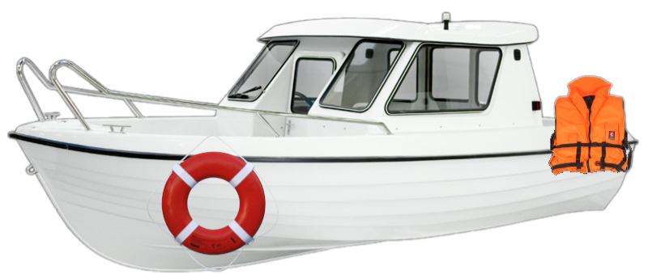

Правила безопасности на водном транспорте
В любых случаях, если вы путешествуете водным транспортом, вам необходимо помнить правила безопасности и инструкции, которые регламентируют правила поведения во время путешествия по воде. Итак, вы путешествуете по воде. На каждом правильном судне присутствует инструкция, в которой описан план действий, пути эвакуации, места размещения спасательных жилетов и спасательных шлюпок на борту. Если вы таких инструкций не обнаружили, или выяснить наличие спасательных жилетов затруднительно, то лучше пассажиром этого судна не быть. Помните, что, вступая на борт судна, вы оказываетесь на территории обособленной транспортной единицы и поступаете в распоряжение капитана судна. А это значит, что вы должны безоговорочно подчиняться его указаниям или указаниям его помощника, и соблюдать дисциплинарные обязанности, которые прописаны на судне. Ваше путешествие зависит от того, как капитан организует плавание. После того, как вы расположились в каюте, внимательно ознакомьтесь с инструкциями, посвященными безопасности судна и его пассажиров. Проверьте наличие спасательного жилета и его пригодность. Спасательные жилеты размещают в ящиках под спальными местами, в шкафах или на полках в каюте. Прочтите информацию о спасательном жилете нормах и требованиях к этому изделию заранее, а не когда случится авария. Если на борту судна возникла чрезвычайная ситуация, четко выполняйте указания капитана, его помощников и экипажа судна, избегайте паники. Воспользуйтесь спасательным жилетом. При необходимости эвакуации первыми покидают борт дети, женщины, больные или раненные люди. Каждое судно укомплектовано спасательными кругами. Спасательный круг – это средство оказания помощи утопающему. Он изготовлен из твердых, прочных материалов, которые не тонут, и чаще всего имеет форму бублика. На круге закреплён специальный трос, называемый леером. Если вы увидели человека за бортом, немедленно сообщите об этом капитану судна (громкий выкрик “человек за бортом!” передается от человека к человеку) и бросьте спасательный круг на воду.
